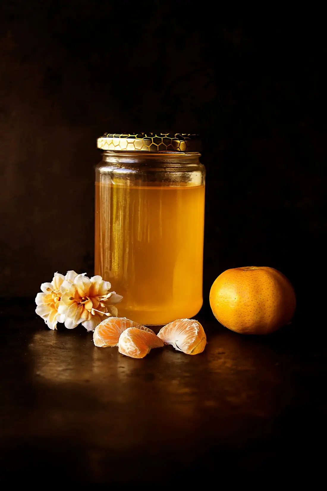
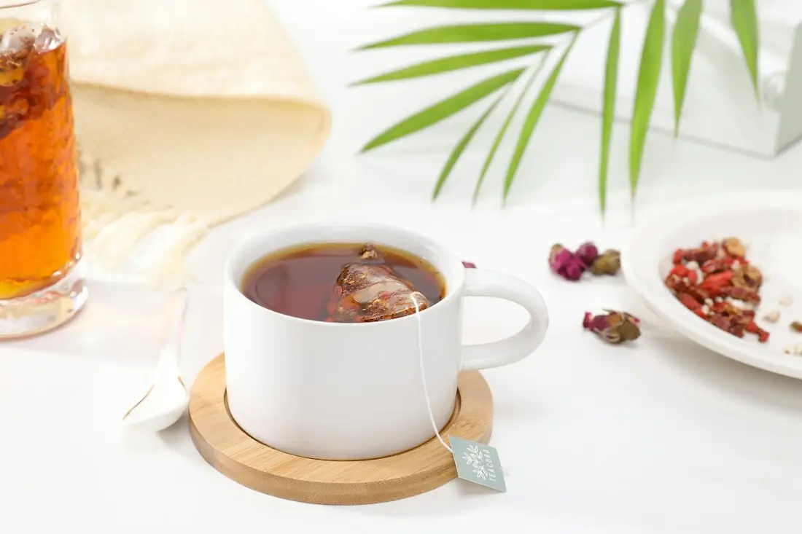
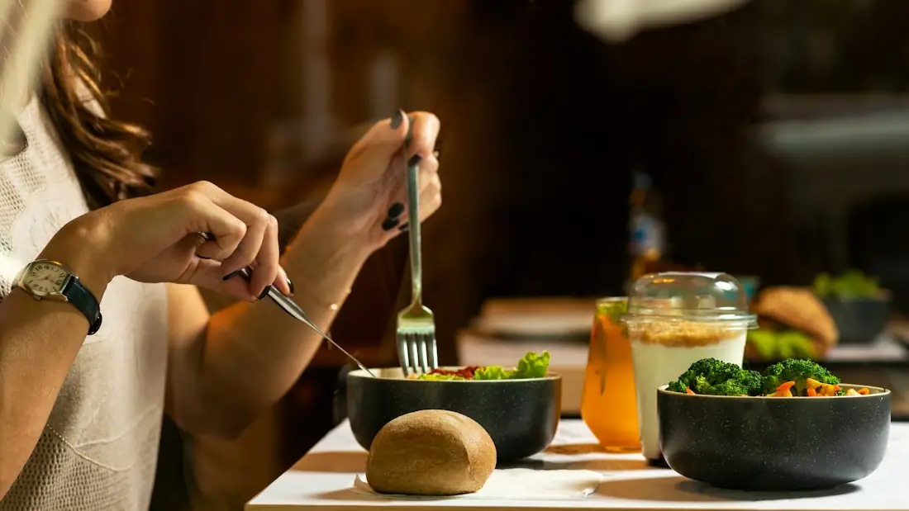
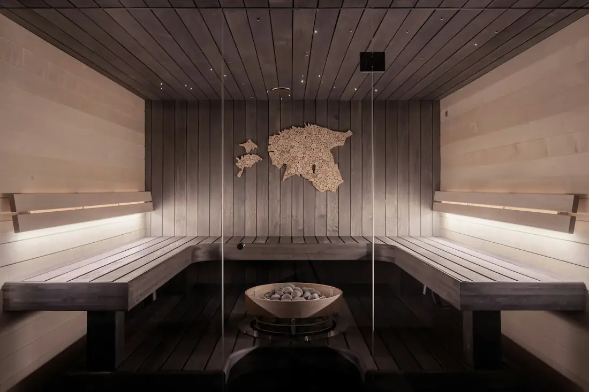
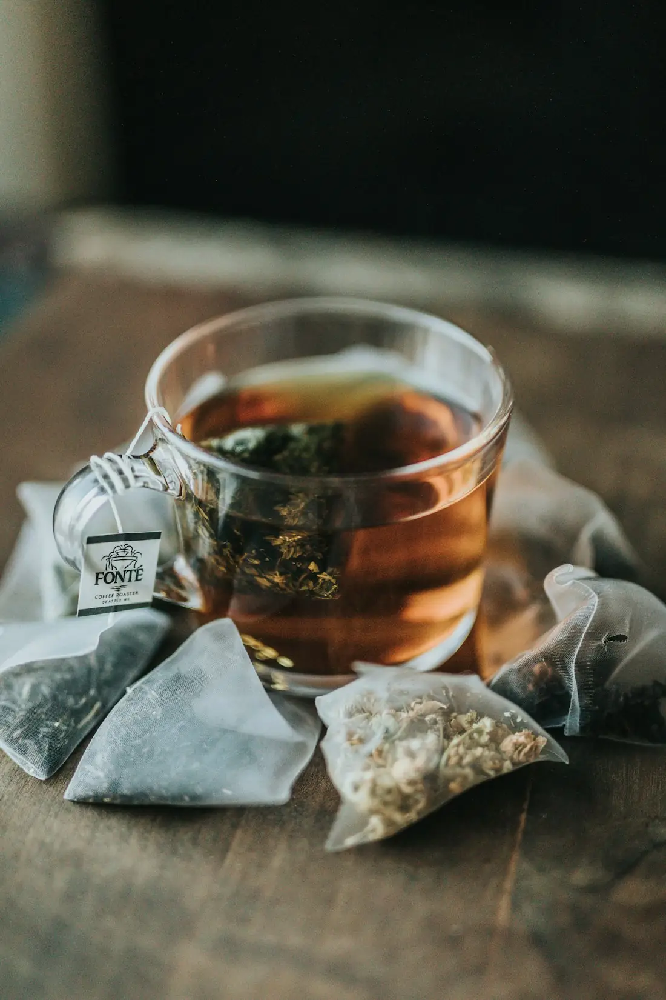

柒
診所環境





台北中山區的健保特約中醫診所，提供中醫內科、針灸、傷科推拿，以及婦科、兒科與皮膚過敏門診。
週一至週六 早・午・晚診 ｜
捷運中山國小站步行 3 分鐘

緩禾中醫診所成立於 2016 年，位於台北市中山區民生東路上。診所以木質與暖色調打造安靜的看診環境，希望每位來到這裡的人，都能放慢腳步，好好說明身體的狀況。
中醫看診講究「四診合參」：望、聞、問、切。醫師會花時間了解您的作息、飲食、睡眠與過往病史，綜合判斷後，說明處方或針灸等處置的方向，並給予日常生活上的建議。
本院為健保特約診所，科學中藥與針灸、傷科處置皆可使用健保。若您同時在其他醫療院所就醫或服用西藥，請於看診時主動告知醫師。
依您的狀況由醫師評估適合的處置方式，以下為常見的就診原因，實際診療內容以醫師判斷為準。
透過四診了解體質與症狀，開立科學中藥並提供作息飲食建議。
醫師評估後選取穴位施針，使用單次拋棄式無菌針具。
針對筋骨與關節不適進行評估與手法處置，必要時建議轉診檢查。
依生理週期與體質調整用藥，並提供日常保養建議。
依兒童體質與年齡調整劑量，以溫和方式說明照護重點。
從體質與生活作息切入，與西醫治療並行時請告知用藥。
大部分門診可使用健保，少數項目因不在健保給付範圍，將於看診時先行說明。
依健保署規定收取掛號費與部分負擔。
由醫師評估是否適合，費用於處置前告知。
三位中醫師皆領有中醫師證書，並定期參與繼續教育課程。
初診約需 30 分鐘，複診約 10 至 15 分鐘。
電話、LINE 或現場掛號，出示健保卡。
填寫病史、過敏史與目前用藥。
醫師問診、觀察舌象並把脈。
開立藥方，或進行針灸、傷科處置。
說明服藥方式與飲食注意，約定回診。
依循節氣調整作息與飲食，以下為一般性生活建議，個人體質不同，請以醫師建議為準。
早睡早起、適度伸展。天氣多變，注意保暖，飲食以清淡為主。
天熱易流汗，記得補充水分，冰品適量，避免長時間待在冷氣房。
氣候轉乾，多喝溫水，作息規律，皮膚與呼吸道需多加照顧。
注意頭頸與腳部保暖，進補前建議先請醫師評估體質是否適合。




掛號至各診結束前 30 分鐘。春節與國定假日門診另行公告。
| 時段 | 一 | 二 | 三 | 四 | 五 | 六 | 日 |
|---|---|---|---|---|---|---|---|
| 早診09:00–12:00 | 葉 | 方 | 葉 | 鍾 | 葉 | 方 | 休 |
| 午診14:30–17:30 | 鍾 | 葉 | 方 | 葉 | 鍾 | 休 | 休 |
| 晚診18:30–21:00 | 方 | 鍾 | 葉 | 方 | 鍾 | 休 | 休 |
※ 葉：葉禾謙院長 方：方緩之醫師 鍾：鍾以安醫師。三伏貼、三九貼期間另有加開時段。
若有其他疑問，歡迎來電或透過 LINE 詢問。
一般建議中藥與西藥間隔約一至兩小時服用。請於看診時告知目前使用的西藥，醫師會依您的狀況說明。
下針時可能有輕微刺痛，留針時會有痠、脹、麻的感覺，多數人可以接受。若感到不適，請隨時告知醫師。
可以，但部分藥材與穴位孕期需要避免。請在掛號與看診時主動告知懷孕週數。
兒童用藥會依年齡調整劑量，科學中藥可加少量溫水或蜂蜜（一歲以上）調和，讓孩子較容易入口。
依病況而定，一般約每一至兩週回診，醫師會依您的狀況調整處方與回診時間。